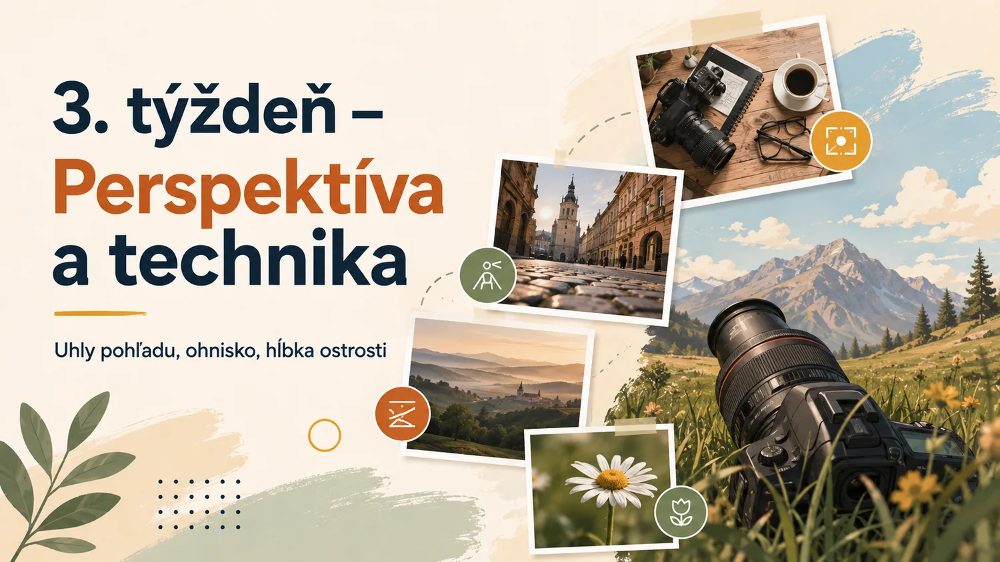
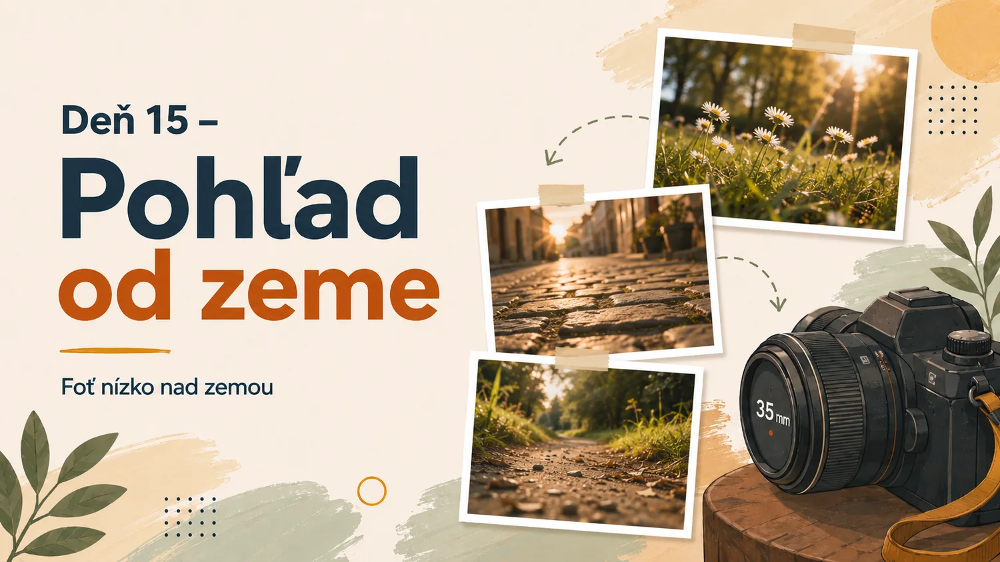
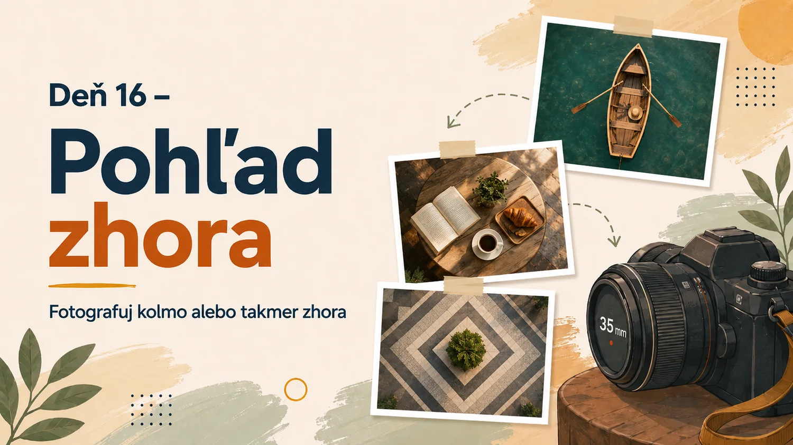
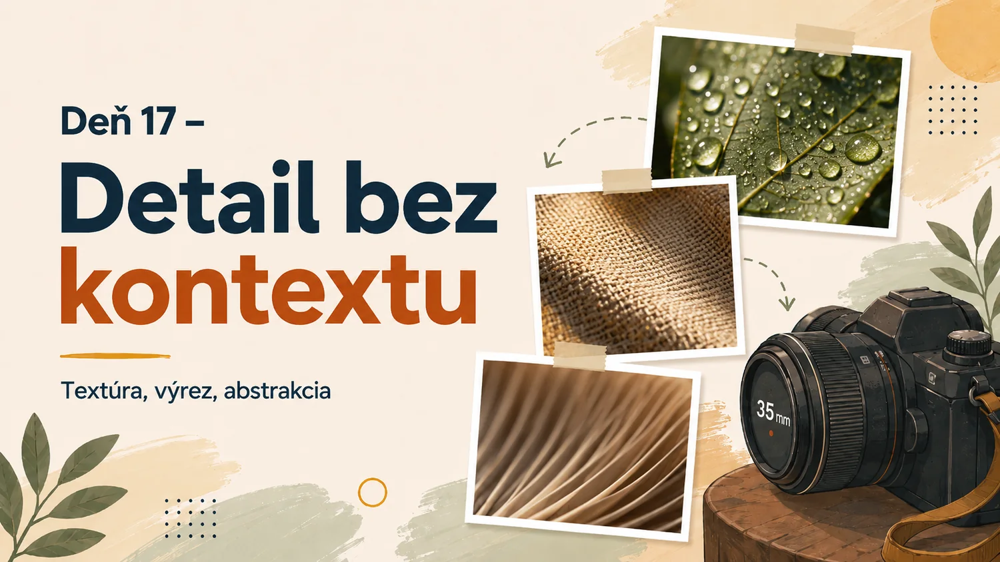
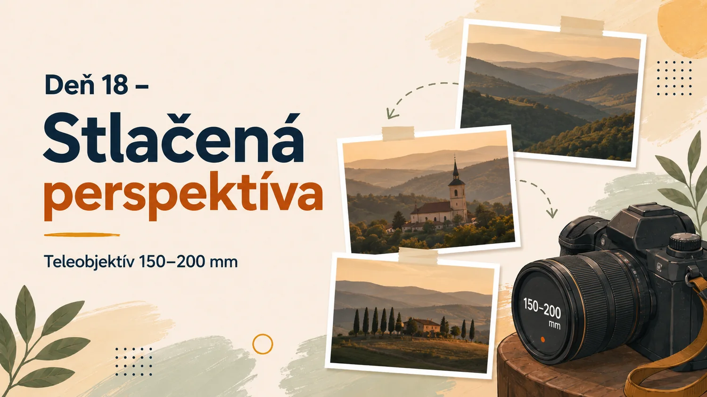
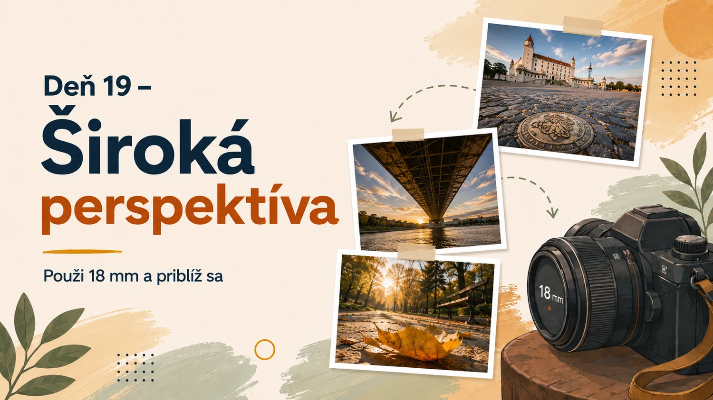
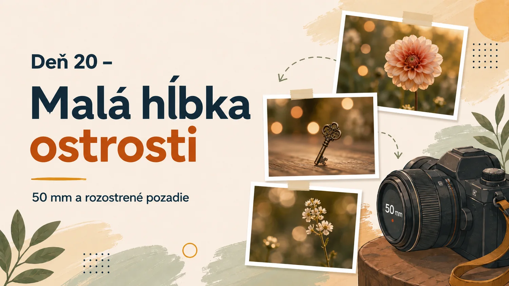
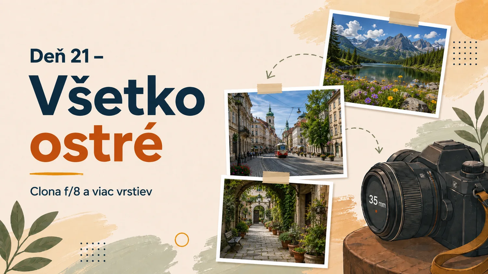

3. týždeň – Perspektíva a technika
Uhly pohľadu, ohnisková vzdialenosť a hĺbka ostrosti

Deň 15 – Pohľad od zeme

Zadanie
Všetky fotografie vytvor čo najnižšie nad zemou. Fotografuj cez trávu, pozdĺž chodníka alebo z úrovne malých predmetov.
Cieľ cvičenia: Objavenie nezvyčajnej perspektívy.
18–200 mm
A, výklopný displej
Moje hodnotenie a poznámky
Pri hodnotení si polož otázky: Čo je hlavným objektom? Kam sa pozerám ako prvé? Čo funguje? Čo ruší? Čo by som pri opakovaní zmenil?
Deň 16 – Pohľad zhora

Zadanie
Fotografuj objekty kolmo alebo takmer kolmo zhora. Hľadaj tvary, vzory a usporiadanie plôch.
Cieľ cvičenia: Zjednodušenie scény do geometrických prvkov.
18–200 mm alebo 50 mm
A, kontrola rovnobežnosti
Moje hodnotenie a poznámky
Pri hodnotení si polož otázky: Čo je hlavným objektom? Kam sa pozerám ako prvé? Čo funguje? Čo ruší? Čo by som pri opakovaní zmenil?
Deň 17 – Detail bez kontextu

Zadanie
Odfotografuj iba časť objektu tak, aby nebolo okamžite jasné, čo zobrazuje. Pracuj s textúrou, farbou a výrezom.
Cieľ cvičenia: Pozornosť k detailom a abstrakcia.
50 mm alebo dlhšie ohnisko
A, najnižšie dostupné clonové číslo
Moje hodnotenie a poznámky
Pri hodnotení si polož otázky: Čo je hlavným objektom? Kam sa pozerám ako prvé? Čo funguje? Čo ruší? Čo by som pri opakovaní zmenil?
Deň 18 – Stlačená perspektíva

Zadanie
Použi ohnisko približne 150–200 mm a spoj vzdialené vrstvy scény tak, aby pôsobili bližšie pri sebe.
Cieľ cvičenia: Pochopenie vizuálneho účinku teleobjektívu.
18–200 mm na 150–200 mm
A, krátky čas alebo stabilizácia
Moje hodnotenie a poznámky
Pri hodnotení si polož otázky: Čo je hlavným objektom? Kam sa pozerám ako prvé? Čo funguje? Čo ruší? Čo by som pri opakovaní zmenil?
Deň 19 – Široká perspektíva

Zadanie
Použi približne 18 mm a priblíž sa k hlavnému objektu. Zdôrazni rozdiel medzi popredím a pozadím.
Cieľ cvičenia: Práca s výraznou priestorovou perspektívou.
18–200 mm na 18 mm
A, približne f/5,6 až f/8
Moje hodnotenie a poznámky
Pri hodnotení si polož otázky: Čo je hlavným objektom? Kam sa pozerám ako prvé? Čo funguje? Čo ruší? Čo by som pri opakovaní zmenil?
Deň 20 – Malá hĺbka ostrosti

Zadanie
Použi 50 mm f/1,8, priblíž sa k objektu a zväčši vzdialenosť medzi objektom a pozadím. Zaostri presne na hlavný detail.
Cieľ cvičenia: Oddelenie objektu od pozadia.
50 mm f/1,8
A, f/1,8 až f/2,8
Moje hodnotenie a poznámky
Pri hodnotení si polož otázky: Čo je hlavným objektom? Kam sa pozerám ako prvé? Čo funguje? Čo ruší? Čo by som pri opakovaní zmenil?
Deň 21 – Všetko ostré

Zadanie
Vytvor fotografiu s viacerými ostrými vrstvami. Použi približne f/8, vhodný bod zaostrenia a dostatočne stabilný fotoaparát.
Cieľ cvičenia: Vedomá práca s väčšou hĺbkou ostrosti.
18–200 mm
A/M, približne f/8
Moje hodnotenie a poznámky
Pri hodnotení si polož otázky: Čo je hlavným objektom? Kam sa pozerám ako prvé? Čo funguje? Čo ruší? Čo by som pri opakovaní zmenil?